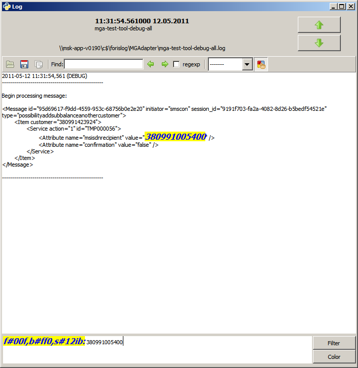

Область редактирования подсветки текста в окне просмотра лога состоит из:
Cинтаксис подсветки:
f#цвет_текста,b#цвет_фона,s#стиль_текста: регулярное_выражение
, где #цвет_текста и #цвет_фона - шестнадцатиричное значение цвета в системе RGB, стиль текста - размер, i и/или b - соответствующее начертание, регулярное_выражение - текст, который необходимо подсветить.
Все составляющие подсветки опциональны и могут следовать в любом порядке.
При переходе к следующему/предыдущему логу подсветка сохраняется.